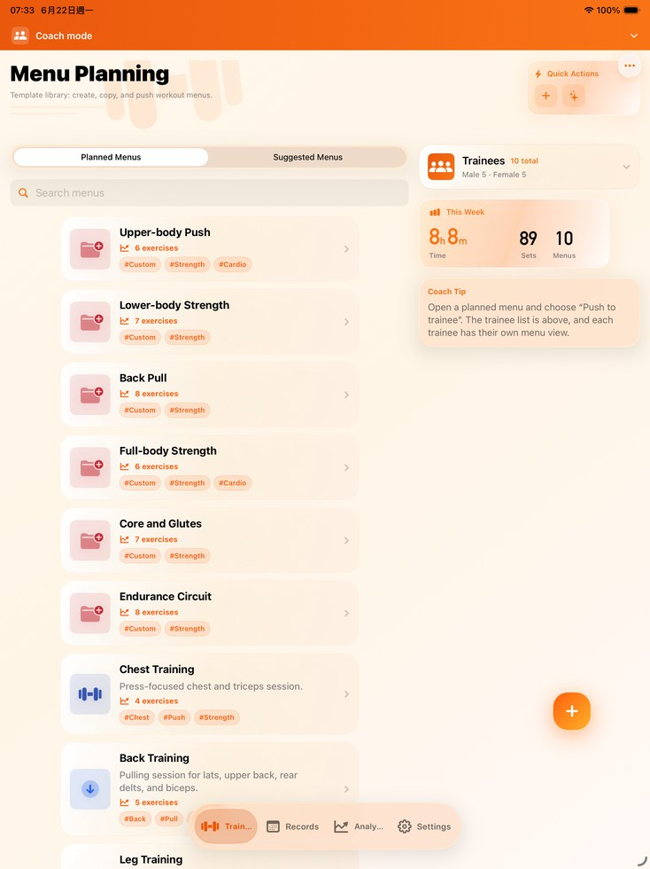

Complete FitRoster Pro tutorial
Usage Tutorial
A complete guide for setting up FitRoster Pro, editing exercise names, building reusable plans, logging sessions, using coach-trainee workflows, reading records and analysis, and protecting your data.
Plan
Create menus, templates, custom exercises, and reusable routines.
Coach
Send plans, receive trainee progress, and review training context.
Review
Use records, goals, body data, and muscle distribution for decisions.


Role-based tutorial
Choose the workflow you actually use.
The guide reorganizes every feature into a coach path and a trainee path, from first setup through planning, records, analysis, periodization, and sharing.
Coach path
Set up the professional workspace, connect a trainee, create and deliver plans, then review progress without mixing role data.
FAQ
Detailed support questions.
Use these answers when something looks different from the screenshots or when sync, records, or custom exercise names need clarification.
Support
Need more help?
Use the support page if you need help with iCloud sync, coach-trainee sharing, backup files, app language, or a specific screen in FitRoster Pro.